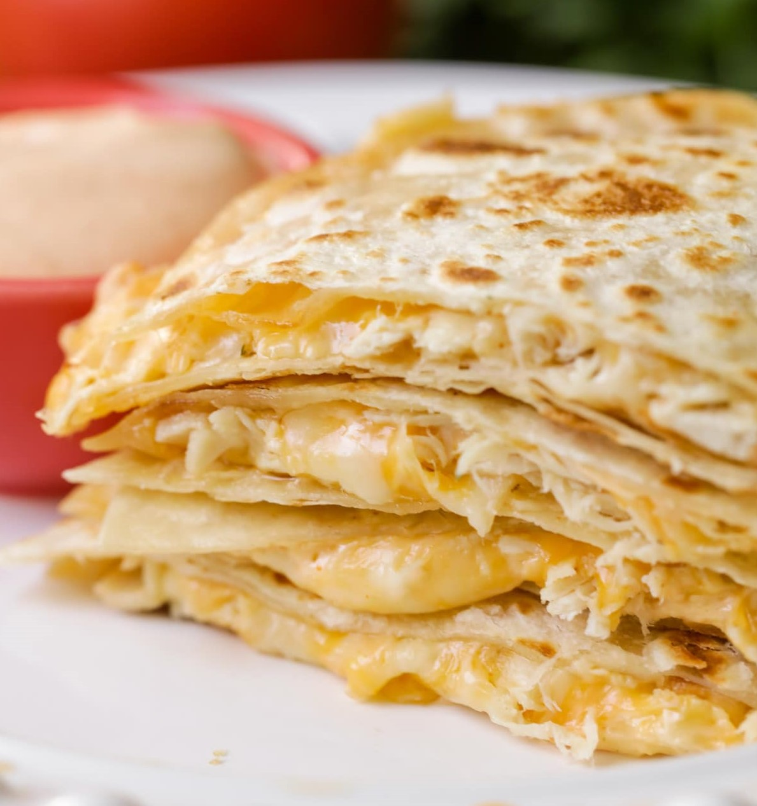

Chicken Quesadilla
A cheesy, delicious hot pocket of joy.
Servings
1

Ingredients
- 2 tortillas (i.e. flour, whole wheat)
- 1 cup shredded cheddar cheese
- 4 oz diced, cooked chicken
A cheesy, delicious hot pocket of joy.